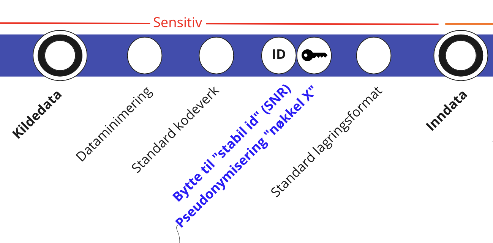

Kildedata prosessering
Denne tjenesten er under utvikling og kan ikke anses som klar for produksjon.
For å minske aksessering av PII1, oppfordres alle team på Dapla å benytte seg av automatisering av kildedata prosessering. Automatisering av kildedata er en tjeneste som er tilgjengelig for team å ta i bruk 100% selv-betjent. Kildedata (Standardutvalget 2021, 5) prosesseres til inndata gjennom et bestemt utvalg av operasjoner. Kildedata prosesseres som individuelle filer for å holde oppsettet enkelt og målrettet mot de definerte operasjoner. Mer kompleks operasjoner som går på tvers av flere filer burde utføres på inndata eller senere datatilstander.
Det er kun teamets kildedataansvarlige som skal aksessere kildedata.
Teamets kildedataansvarlige tar ansvar for å prosessere kildedata til inndata på en forsvarlig måte.
Operasjoner som inngår i kildedata prosessering

Inndata er kildedata som er transformert til SSBs standard lagringsformat. Variabelnavn og -innhold er uendret bortsett fra at
- direkte identifiserende variabler (f.eks. fødselsnummer) er pseudonymisert
- tegnsett, datoformat, adresse mm er endret til SSBs standardformat
- det benyttes standard kodeverk (Klass) der det er mulig (f.eks. kjønn)
- dataene er minimert slik at kun variablene som er nødvendige i den videre produksjonsprosessen, inngår.
Det er ikke anbefalt å gjennomføre operasjoner som:
- Går på tvers av flere filer
- Legge til nye felt
- Endre navn på felt
- Aggregerer data
- osv.
Ta tjenesten i bruk
Koble ditt prosjekt til Github
Følg instruksjonene her for å koble prosjektet ditt til Github.
Konfigurere en kilde
Hvor skal det konfigureres?
Kilder konfigureres i et teams Infrastructure as Code (IaC) repo på Github. Det kan finnes basert på følgende formulering: github.com/statisticsnorway/<teamnavn>-iac. Kilder konfigureres under stien automation/source_data på repoet.
Hvilke filer konfigurerer en kilde?
Hver kilde konfigureres ved hjelp av to filer:
config.yamlsom blant annet konfigurer hvilke stier i teamets kildedatabøtte prosesseres.process_source_data.pysom kjøres når en kildedatafil prosesseres. Her må man skrive en python funksjon på en viss format.
Disse filene er lagt til en mappe per kilde, under automation/source_data i IaC repoet. Se eksemplet under for en detaljert forklaring.
Mappenavnet for kilder i IaC repoene er brukt som navn for ressurser. Dette i praksis betyr at det enesete tillatte tegnene i mappenavnet er bokstaver, tall og bindestrek. Det er ikke tillatt med mellomrom eller andre spesialtegn. Det også må begrenses i lengde.
Når konfigureres en kilde?
Dette går ut på om prosesseringsscriptet kan enkelt håndtere variasjonen i filene som samles inn.
Grunn til å opprette en ny kilde kan være: - Kildedatafilen har en annen format (f.eks xml eller json) - Kildedataen har ulike felter - Kildedataen inneholder PII2 eller ikke
Fremgangsmåten
Disse instruksjoner forutsetter at prosjektet ditt er koblet til Github allerede.
- Skrive skriptet
process_source_data.pysom prosesserer kildedatafilen til inndata. Dette kan testes av kildedataansvarlige manuelt på Jupyter for å verifisere at dataene blir prosessert som ønsket. - I en gren i teamets IaC repo, legge til
config.yamlogprocess_source_data.pyi en mappe underautomation/source_data. Se eksemplet under for en detaljert forklaring av formatet. - Lag en PR på grenen og få den godkjent av kildedataansvarlige.
- Skrive
atlantis applyi en kommentar på PRen for å opprette det nødvendige infrastruktur for å prosessere kilden. - Merge PRen.
- Verifisere at nye filer lagt i kildedatabøtten blir prosessert til inndata som forventet.
Eksempel
La oss si at et team (småbakst) har to datakilder levert av ulik dataeiere på ulik formater. Den ene er om boller og er på csv format og den andre er om rundstykker og er på json format. Kildedataansvarlige i teamet bestemmer seg for at filene i boller/ er like nok å prosesseres som en kilde, og at filene i rundstykker/ kan prosesseres som en annen kilde.
Filstruktur i kildedatabøtte
ssb-prod-smaabakst-data-kilde
├── boller
│ ├── hvetebolle
│ │ ├── 2018-salg.csv
│ │ ├── 2019-salg.csv
│ │ ├── ...
│ ├── kanelbolle
│ │ ├── 2018-salg.csv
│ │ ├── 2019-salg.csv
│ │ ├── ...
│ └── skolebolle
│ ├── 2018-salg.csv
│ ├── 2019-salg.csv
│ ├── ...
└── rundstykker
├── haandverker
│ ├── apr-2022-resultater.json
│ ├── aug-2022-resultater.json
│ ├── ...
└── havre
├── apr-2022-resultater.json
├── aug-2022-resultater.json
├── ...Struktur i IaC repo
smaabakst-iac
└── automation
└── source_data
├── boller
│ ├── config.yaml
│ └── process_source_data.py
└── rundstykker
├── config.yaml
└── process_source_data.pyInnhold i config.yaml for boller
folder_prefix: bollerVerdien for folder_prefix tilsvarer en “fil sti” i kildedatabøtte. I dette tilfellet vil nye filer lagt til under boller/ trigge en prosessering.
Innhold i config.yaml for rundstykker
folder_prefix: rundstykkerSkrive prosesseringsscriptet
Med prosesseringsscriptet mener vi filen process_source_data.py som ligger i en mappe per kilde under automation/source_data. Dette scriptet vil bli kalt hver gang det blir lagt til en ny fil i kildedatabøtten. Metodesignaturen ser slik ut:
def main(file_path):
"""Function is called when a file is added to the source-data bucket.
Args:
file_path: full file path of the source data file.
"""Dette betyr at hvis f.eks. 10 filer blir lagt til i kildedatabøtten samtidig så vil det startes opp 10 individuelle Python-prosesser som kaller denne main-metoden med forskjellig file_path. Parameteren file_path vil inneholde hele filstien inkl. filnavn. Så en enkel flytteoperasjon fra kildedatabøtten til inndatebøtten (uten noen form for konvertering) vil kunne uttrykkes slik:
import dapla as dp
def main(file_path):
"""Function is called when a file is added to the source-data bucket.
Args:
file_path: full file path of the source data file.
"""
source_bucket_name = "ssb-prod-my-project-data-kilde"
destination_bucket_name = "ssb-prod-my-project-data-produkt"
destination_path = file_path.replace(source_bucket_name, destination_bucket_name)
df = dp.read_pandas(file_path)
dp.write_pandas(df, destination_bucket_path)Alternativt…
from dapla import FileClient
def main(file_path):
"""Function is called when a file is added to the source-data bucket.
Args:
file_path: full file path of the source data file.
"""
source_bucket_name = "ssb-prod-my-project-data-kilde"
destination_bucket_name = "ssb-prod-my-project-data-produkt"
destination_path = file_path.replace(source_bucket_name, destination_bucket_name)
fs = FileClient.get_gcs_file_system()
fs.copy(file_path, destination_path)